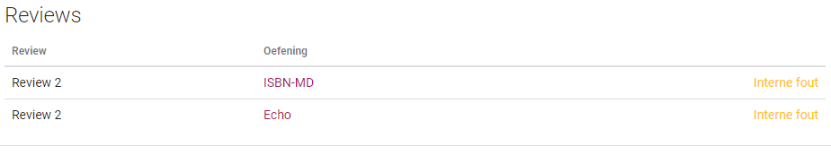

Werken met reviews als gebruiker¶
Gebruikers zijn beperkt in het gebruik van reviews, ze zijn enkel in staat om de opmerkingen van vrijgegeven reviews te bekijken.
Verbeterde oplossingen bekijken¶
Op de cursus pagina is er voor gebruikers slechts één nieuw element, een lijst met alle vrijgegeven reviews. In deze lijst staan voor alle vrijgegeven reviews waarin de gebruiker inbegrepen is de ingediende oplossingen. Per rij staat de naam van de review, de oefening en de status van de oplossing. De status is aanklikbaar en verwijst door naar de oplossing pagina. Hierop kan de gebruiker de gemaakte opmerkingen zien en reageren.
